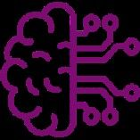
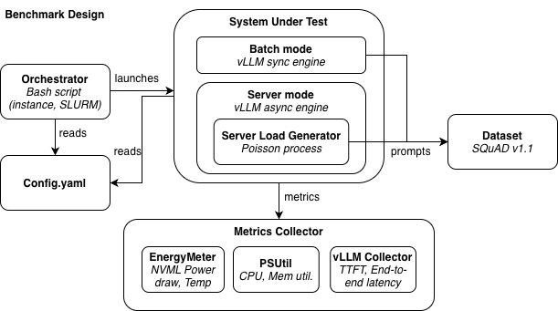
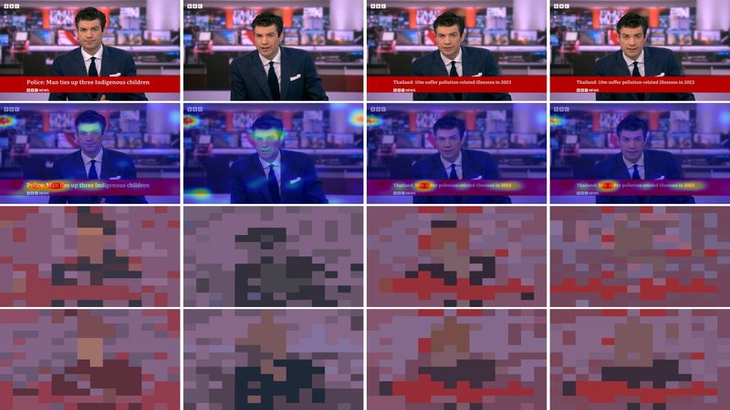
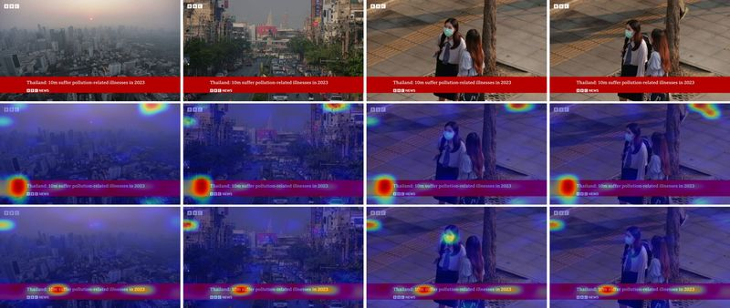
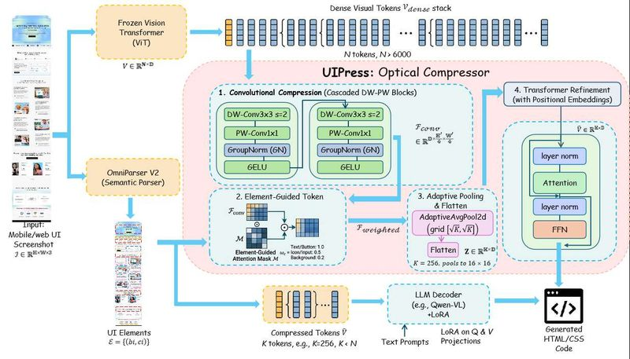

将大型语言模型部署到移动设备上是实现数据隐私和离线可访问性的新兴趋势。现代移动神经处理单元（NPU）使这种部署日益可行。然而，现有移动LLM推理框架在模型未驻留在设备内存中时，不可避免地面临冷启动问题，导致启动延迟极高。
移动LLM应用的冷启动延迟严重影响用户体验——以Llama3 8B为例，state-of-the-art的llm.npu框架在128输入token下冷启动的首次token时间（TTFT）高达9.1秒。研究者发现，现有框架将所有权重统一量化为相同精度（如INT8），忽略了不同权重对模型精度的贡献差异，从而浪费了宝贵的闪存带宽。
EdgeFlow通过量化算法与移动推理系统的协同设计，首次系统性地解决了移动LLM部署中的冷启动瓶颈。其NPU感知自适应量化在精度与带宽利用率之间取得了优异的平衡，为端侧大模型的高效部署提供了重要的工程实践参考。

现代LLM强化学习（RL）工作负载需要在训练器和rollout工作器之间进行高频、大容量的模型权重传输。随着集群规模扩大和rollout策略多样化（独立rollout、弹性spot实例、跨数据中心），现有基于NCCL集体通信或分布式存储的权重传输方案面临扩展性瓶颈。
现有方案无法在拓扑感知、弹性扩展、最小协调、最小数据移动和无额外存储开销这五个目标上同时满足需求。NCCL需要静态通信组，对动态集群和故障敏感；P2P通信缺乏全局负载视图；分布式存储则因"push-then-pull"模式导致数据移动翻倍，且TB级LLM权重的存储开销巨大。
TensorHub通过ROS架构革新性地解决了大规模RL训练中的权重传输难题，在保留存储接口灵活性的同时消除了传统方案的数据移动和存储开销。这项工作对构建可扩展、弹性的LLM RL基础设施具有重要的系统级参考价值。

LLM推理部署的能源消耗问题日益受到关注，但系统运维人员缺乏能够指导异构硬件上能效权衡的基准测试和数据。现有研究大多局限于特定GPU或批处理场景，无法为实际的异构LLM系统部署提供全面的决策依据。
如何在没有物理功率计的情况下，系统性地评估50个LLM模型在10种NVIDIA GPU（覆盖5代架构）上的能源效率？不同部署场景（批处理vs在线服务）下，最优的LLM-GPU组合是否一致？这些问题亟需大规模、开源、可复现的实证数据集来回答。
Watt Counts填补了LLM异构GPU能效评估领域的关键空白，其系统级分析揭示了模型架构、GPU特性与部署场景之间复杂的能效权衡关系。对于需要在性能与可持续性之间做决策的系统运维人员，这是一份极具实用价值的参考基准。

Token剪枝已成为开发高效Video LLM的主流方法。现有方法主要分为两类：基于注意力分数的显著性选择和基于相似度的聚类合并。然而，这两种范式在实际应用中均存在明显的局限性，限制了压缩比与精度的平衡。
研究者发现两个关键问题：(1) 注意力分布通常是空间多模态且长尾的，简单的Top-k选择策略无法充分捕捉这种分布；(2) 直接基于相似度的聚类容易产生空间碎片化的簇，导致池化后的表示失真。如何同时优化这两种视觉信号的利用成为提升Video LLM效率的核心挑战。
Tango通过对注意力分布和相似度聚类两大基础范式的深入改进，实现了Video LLM在极高压缩比下的近无损推理。ST-RoPE的引入为视觉Token的空间连续性约束提供了一种优雅且通用的解决方案，对多模态大模型的高效化具有重要的借鉴意义。


UI-to-Code生成任务要求视觉-语言模型（VLM）从单张截图生成数千个token的HTML/CSS代码。这使得视觉token效率至关重要。现有压缩方法要么在推理时使用任务无关的启发式规则进行选择，要么仅将低注意力特征置零而不真正缩短序列——两者都未能真正降低prefill延迟。
光学（encoder-side learned）压缩在文档OCR中已取得显著成效，但尚未被引入UI-to-Code领域。UI截图具有非均匀的信息密度，需要一种能够自适应地学习如何压缩视觉token的方法，而不是依赖手工设计的推理时策略。
UIPress展示了在特定垂直任务（UI-to-Code）中，encoder-side learned压缩相比通用的推理时token选择具有显著优势。其极低的额外参数开销和卓越的prefill加速效果，为VLMs在需要高视觉token效率的下游任务中的应用开辟了新的可能性。
| 论文 | 核心贡献 | 适用场景 |
|---|---|---|
| EdgeFlow | NPU感知自适应量化，移动冷启动优化 | 移动端LLM部署 |
| TensorHub | ROS无所有权存储，生产级RL权重传输 | 大规模RL训练基础设施 |
| Watt Counts | 异构GPU能效大规模基准数据集 | 绿色AI部署决策 |
| Tango | ST-RoPE时空位置编码，Video LLM Token剪枝 | 视频多模态模型加速 |
| UIPress | Encoder-side learned UI视觉Token压缩 | UI-to-Code / VLM垂直任务 |